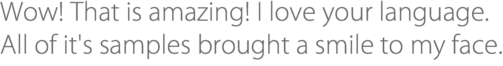
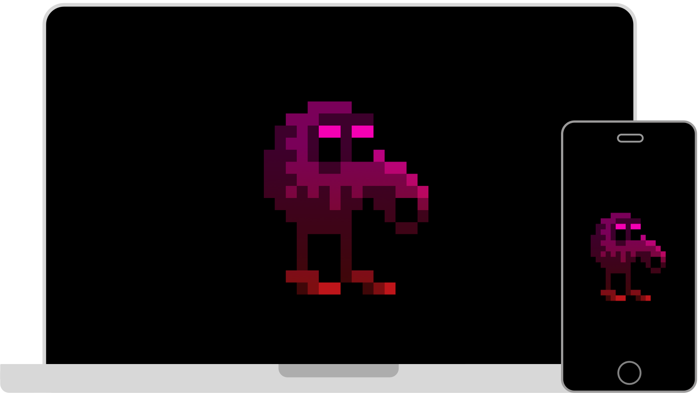

Arendelle is a simple new programming language for creating 8-Bit graphics while learning how to program. By redesigning all the elements of a language and removing unnecessary stuff and merging some of them, Arendelle is by far the easiest and the most fun way of exploring the awesome world of coding just like the Marc-André Cournoyer, author of one of the most famous books on creating programming languages shared this about Arendelle with us:
So you see we can talk hours about why Arendelle is awesome but you have to download it now to see why it's what you can never forgot!
Download ArendelleA great language and a fun environment is just a beginning for a great experience. To take everything to the next level we have studied the way people learn and we tried to create a new way to teach people the way a programmer thinks. We have wrote so many books and references as well as creating video broadcasts and so much more to make sure everyone experiences it well!
Read More
We could create a simple app and make it work everywhere but instead we have created four whole different apps for Mac OS X, Windows, Android and iOS. Why? Because this way Arendelle works natively on any operating system and more than the awesome fact that they look in their most beautiful in any platform, you get the highest speed and quality everywhere so you can code in Arendelle and run your codes in any platform in their best way possible!
Read MoreArendelle is powerful, Under it's simple look there is an infinity potential for you to do extraordinary things with it. People use Arendelle for many tasks, from creating art to solving mathematics or creating games with it! As the most creative language, Arendelle accelerates your creativity too!
Read More